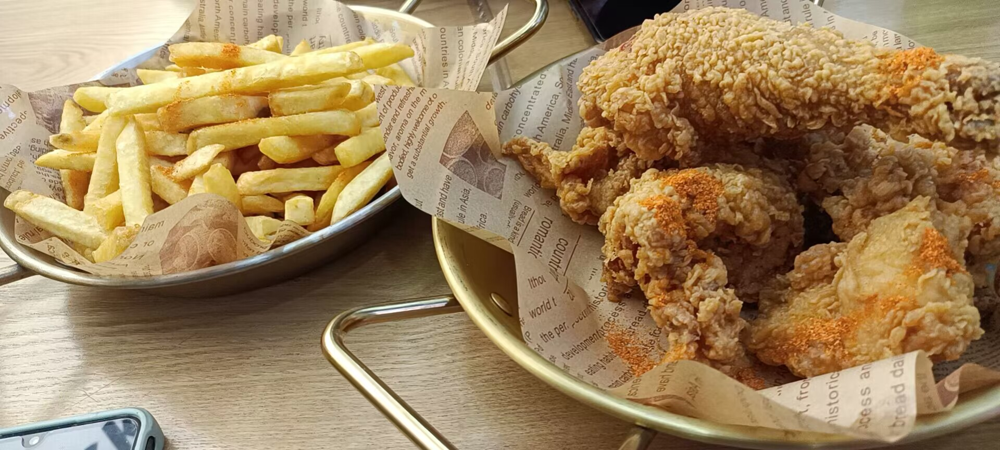

我是来自胡锦超职校20升大6班的胡海桐。进入校园的4个学期,我在学校学到了非常多的专业知识和文化课知识，在老师的教导下和同学们的鼓励下，我踊跃参加了学校以及区级的各类赛事。身为共青团员，我有义务完成每一期的青年大学习和每个月必交的团费。在学习上我坚持一步一个脚印，相信每天进步一点点就会有所收获，在学习上我会遇到问题就向老师和同学请教。在周末我也会参加义工和跑团活动来丰富我的课余生活。在家中帮父母分担家务活动。
特跑族全国10K排位赛总跑名114
顺德区第十二届田径运动会男子4X400米第八名
2020-2021年度第一学期获学习积极分子
2020-2021年度第一学期获优秀班干部
2020第二十五届田径运动会获4x100米第一名
2020第二十五届田径运动会获800米第一名
2020第二十五届田径运动会获1500米第一名
2021年学校职业生涯规划书比赛获一等奖
2021年学校重阳节活动获二等奖
2021年第二十六届田径运动会800米第一名
2021年第二十六届田径运动会100米第四名
2021年第二十六届田径运动会4x100米第七名
2021年“学党史、扬青春”党史知识竞赛获三等奖
2020-2021年度第二学期获优秀学生干部
2020-2021年度第二学期获学习积极分子
2021年度学校获优秀共青团员
2021年学校优秀志愿者
2021年度获二星级志愿者
广东省一星级志愿者
2022年最美胡职少年
2015年容桂街道中小学生足球比赛第五名
2015年荣获容桂街道最佳射手奖
2016年容桂街道中小学生足球比赛第八名
2016年容桂街道中小学生田径运动会200米第三名
2016年容桂街道中小学生田径运动会400米第一名
2016年容桂街道中小学生田径运动会4x100米第三名
2016年顺德区中小学生田径运动会400米第五名
2016年顺德区中小学生田径运动会800米第二名
2016顺德区团体总分第一名
2017年广东省定向越野小学组第四名
2018年容桂街道中小学生田径运动会800米第六名
2018年容桂中小学生田径运动会1500米第四名
2018年容桂中小学生田径运动会4x100米第四名
2018容桂街道容桂外国语学校团体总分第二名
2019年容桂街道田径运动会800米第一名
2019年容桂街道田径运动会1500米第一名
2019年容桂街道田径运动会4x400米第一名
2019年容桂街道田径运动会4x100米第四名
2019年容桂街道容桂外国语学校团体总分第一名
2019年顺德区中小学生田径运动会800米第六名
2019年顺德区中小学生田径运动会1500米第五名
2019年顺德区中小学生田径运动会4x400米第八名
2019年顺德区中小学生田径运动会4x100米第八名
2019年顺德区团体总分第二名
2021年细滘社区益行互助奖
2023年疫情防控奖
2023年防疫先锋奖
汽车工程学院第六届院运会400米第一名
汽车工程学院第六届院运会800米第二名
校运动会4x400米第八名
广东省大学生田径锦标赛400米第16名
广东省大学生田径锦标赛200米第24名
广东省大学生田径锦标赛4x100米第12名
广东顺德容桂马拉松五千米第4名
2024年“奔跑吧.少年”大学组全马运动达人
2024年第三节荧光夜跑第三名
2023-2024年度优秀共青团员
汽车工程学院第七届院运会800米第1名
汽车工程学院第七届院运会400米第2名
汽车工程学院第七届院运会100米第3名